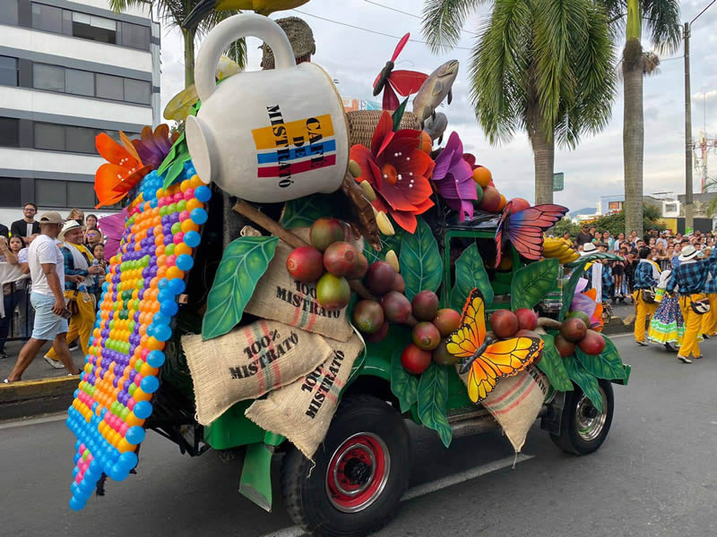

Descubre Risaralda
Risaralda, en el corazón del Eje Cafetero, es un departamento reconocido por su riqueza natural, sus aguas termales y sus parques llenos de vida. Pereira, su capital, se destaca como un destino turístico y empresarial moderno, con una ubicación estratégica que conecta fácilmente con las ciudades vecinas y las principales rutas cafeteras de la región.
Cada mes de agosto, Pereira se llena de alegría y tradición con las Fiestas de la Cosecha, una celebración que rinde homenaje al espíritu trabajador de los caficultores y al aniversario de la ciudad. Durante varios días, las calles se visten de color con desfiles, conciertos, ferias artesanales, exposiciones culturales y eventos gastronómicos que reflejan la identidad y el orgullo pereirano. Es una época ideal para visitar la ciudad, disfrutar de su gente amable y vivir la cultura cafetera en su máxima expresión.
En A&G TOURS ofrecemos transporte turístico y corporativo en todo Risaralda, facilitando el acceso a lugares emblemáticos como el Bioparque Ukumarí, el Santuario de Fauna y Flora Otún Quimbaya y las rutas cafeteras que conforman el Paisaje Cultural Cafetero.
Nuestro compromiso es brindarte experiencias de turismo en Risaralda seguras, puntuales y de alta calidad, pensadas tanto para visitantes nacionales como internacionales que desean descubrir lo mejor del corazón cafetero de Colombia.
Fiestas de la Cosecha (Pereira)
Las Fiestas de la Cosecha son el evento más emblemático de Pereira, celebrado cada agosto para conmemorar el aniversario de la ciudad y rendir homenaje al trabajo de los caficultores risaraldenses. Durante más de una semana, Pereira vibra con desfiles coloridos, conciertos, muestras gastronómicas, ferias artesanales y eventos culturales que exaltan la identidad y el espíritu alegre de su gente. Es una fiesta que combina tradición, arte y cultura cafetera en un ambiente lleno de vida.

Santa Rosa de Cabal
Famoso por sus termales y majestuosas cascadas, Santa Rosa de Cabal es un destino ideal para relajarse y disfrutar de la naturaleza. Sus aguas termales, rodeadas de montañas verdes, ofrecen una experiencia revitalizante en medio del Paisaje Cultural Cafetero. Además, su gastronomía típica, como el chorizo santarrosano, completa la visita perfecta.
Viaducto César Gaviria Trujillo
Este impresionante puente atirantado es una de las obras de ingeniería más destacadas de Colombia y símbolo de la unión entre Pereira y Dosquebradas. Su estructura moderna, iluminada por las noches, no solo facilita la movilidad, sino que también se ha convertido en un ícono arquitectónico del Eje Cafetero.


Megacable de Pereira
El Megacable es un moderno sistema de transporte aéreo que conecta el centro de Pereira con zonas rurales y urbanas, ofreciendo una vista panorámica del valle y las montañas cafeteras. Es una experiencia imperdible para quienes desean disfrutar del turismo urbano con un toque de aventura.
Bioparque Ukumarí
El Bioparque Ukumarí es uno de los atractivos turísticos más importantes de Risaralda. Este innovador parque temático promueve la conservación ambiental y la educación a través de hábitats que recrean ecosistemas de África y América. Ideal para visitar en familia y conocer la biodiversidad del planeta en un entorno natural y educativo.


Santuario de Fauna y Flora Otún Quimbaya
Esta reserva natural es un paraíso para los amantes del ecoturismo y la observación de aves. Sus senderos atraviesan bosques húmedos andinos donde habitan especies únicas como el mono aullador rojo y el gallito de roca. Es un refugio de paz y biodiversidad dentro del Paisaje Cultural Cafetero.
Pereira y su modernidad
Pereira es una ciudad vibrante, moderna y en constante crecimiento. Sus parques, centros comerciales, monumentos y vida nocturna la convierten en el corazón económico y cultural de Risaralda. Además, su gente amable y su ubicación estratégica la hacen el punto de partida ideal para recorrer todo el Eje Cafetero.

Belén de Umbría y sus cafetales
En el corazón del paisaje cafetero, Belén de Umbría cautiva por sus montañas cubiertas de cafetales y su ambiente rural lleno de tradición. Aquí puedes recorrer fincas cafeteras, disfrutar de miradores panorámicos y vivir de cerca la experiencia de la cosecha del café, orgullo del patrimonio colombiano.
¡Contáctanos!